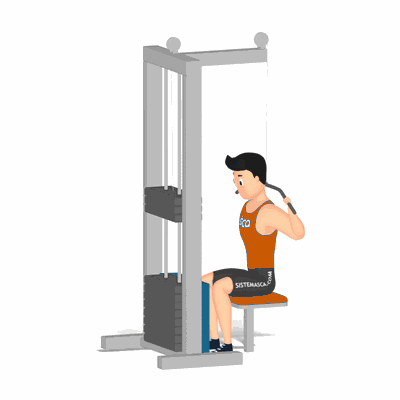

Pulley Costas

Exercício para fortalecimento e hipertrofia da região das dorsais, abrange também, os músculos auxiliares, tais como, trapézio e bíceps braquial. Realiza no aparelho com auxílio de roldanas. Indicado a praticante de musculação nível iniciante ao avançado.
Ficha Técnica
Tipo: Musculação
Grupo Muscular: Costas
Aparelho: Nenhum
Músculos: Nenhum
Como realizar
- Pegue a barra do aparelho com as palmas das mãos voltadas para frente em uma abertura maior que a largura dos ombros;
- Sente no banco com as coxas apoiadas no suporte e o tronco reto;
- Segure a barra com os cotovelos estendidos e a cabeça inclinada levemente para baixo;
- Puxe a barra para trás da cabeça até a região do trapézio, flexionando os cotovelos para baixo, concentrando a força nos músculos das costas;
- Suba a barra estendendo os cotovelos até à posição inicial.
 RC STORE
RC STORE